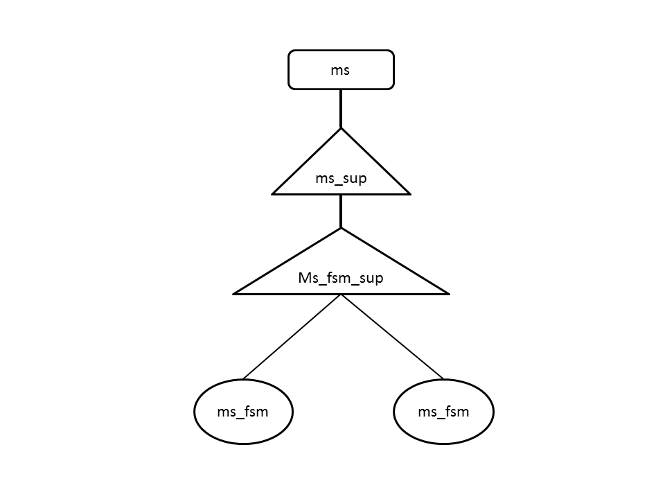

| Overview |  |
Copyright © 2012 ITI Egypt.
Authors: Marwa El-Shahed (marwa.elshahed@hotmail.com), Somaya Hassan [web site: http://www.iti.gov.eg].
MS Application
This application simulates the behaviour of the mobile station in the form of a finite state machine (ms_fsm) which is dynamically allocated to the supervisor (ms_fsm_sup) and the supervisor is the child of another supervisor (ms_sup) which is started with application (ms) itself.
The mobile station has 3 states which are off, on and idle. Each state has a different behaviour. In order to move from one state to another, the msc application needs to be informed. The ms_fsm sends the request to msc application and starts a timer, if there was no confirmation message, the ms_fsm sends the request again. The maximum number of re-trails and the time between them is configurable.
This application is used in simulating 1. IMSI Attach Request (Mobile Switching On). 2. Normal Location Update Request. 3. Periodic Location Update Request. 4. IMSI Deattach Request (Mobile Switching Off). 5. Mobile to Mobile Call Scenario.
The configuration parameters are defined in the .app.src file. A sample configuration file is shown below:
[{env, [{log_file,"/home/marwa/trunk_after_call/ms/priv/log.txt"},{periodic_time,120000},{normal_time, 30000},{no_of_trials, 3}].

Generated by EDoc, Jun 27 2012, 05:53:07.